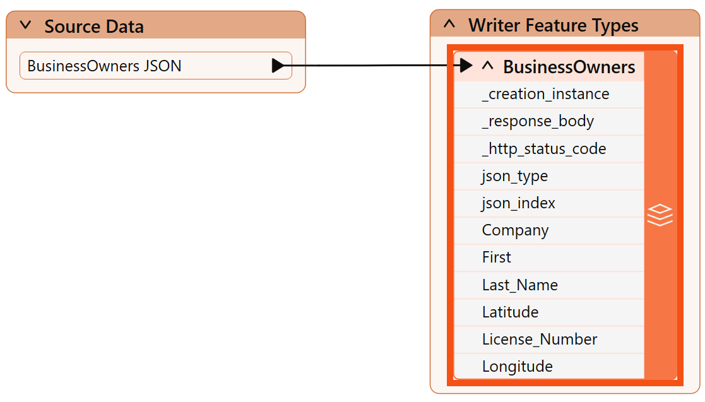
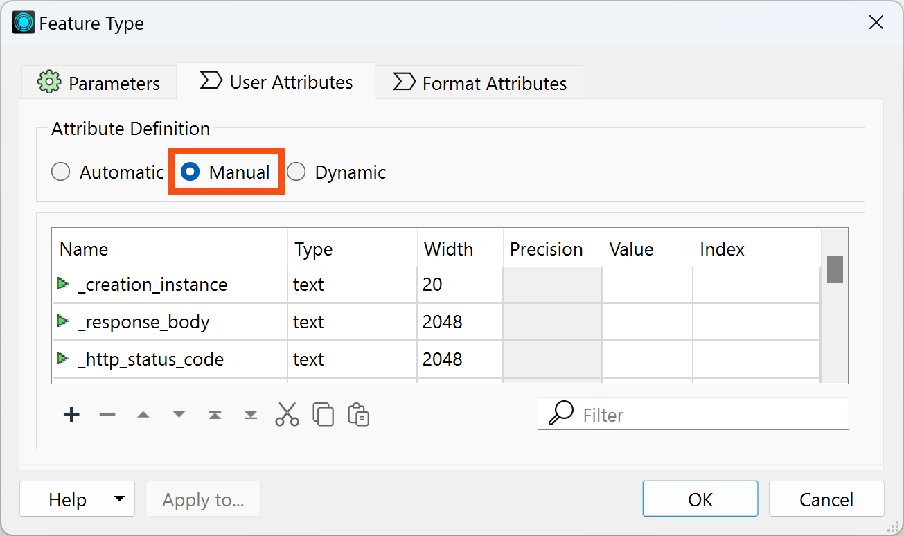
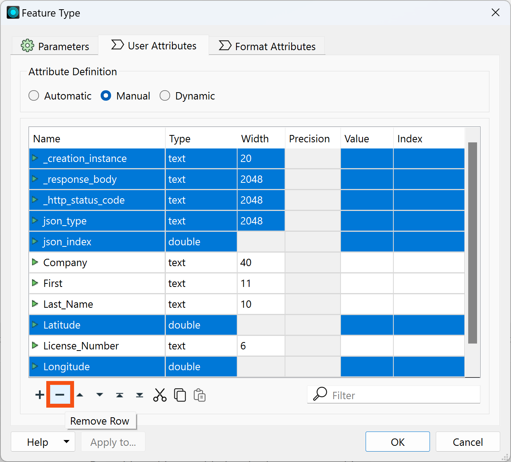
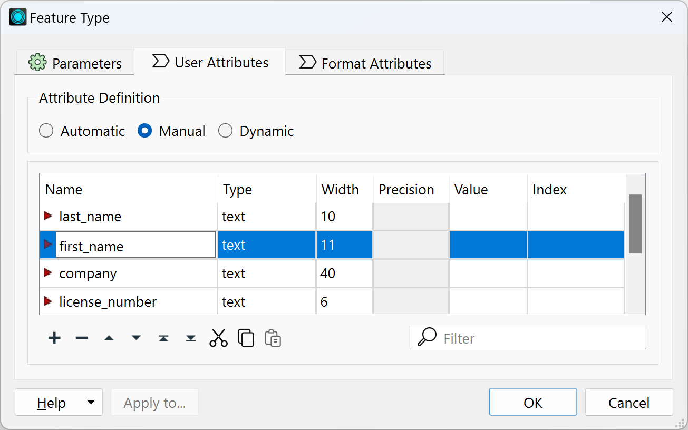
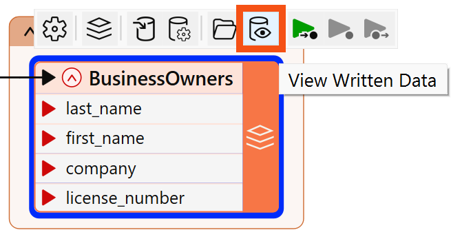
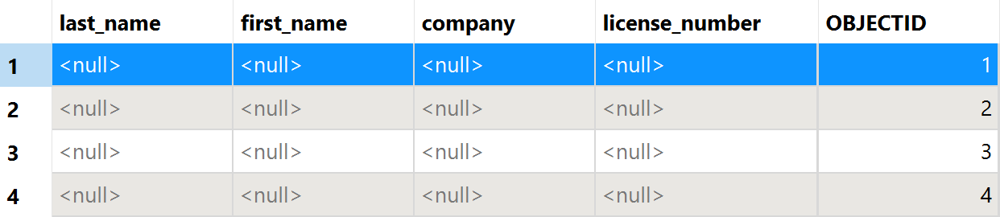

Learning Objectives
After completing this lesson, you’ll be able to:
- View your data’s schema.
- Edit your data’s schema, including feature type and attribute names.
Resources
- Starting workspace
- C:\FMEData\Workspaces\IntegrateDataWithTheFMEPlatform\edit-datas-schema.fmw
- Complete workspace
- C:\FMEData\Workspaces\IntegrateDataWithTheFMEPlatform\edit-datas-schema-complete.fmw
View Source Schema
Jennifer continues working on her workspace in FME Workbench (2024.0 or later). This workspace creates an Esri geodatabase from JSON. Jennifer would like her geodatabase to have a different schema than her source data. She’d like to make the following changes:
- Change some attributes so they make more sense to the public and match destination system requirements:
- All attributes should be lowercase
- “first” renamed to “first_name” to match “last_name”
- Move “last_name” to the first column
- Remove “latitude,” “longitude,” and all HTTPCaller/JSONFragmenter attributes

Manipulating schema (the formal definition of a dataset’s structure) is a key process in FME. When creating an FME workspace that modifies schema, there are generally two steps:
- Edit the schema: define what schema you want on the written data. In FME, this is done by changing the feature type parameters to reflect what you want, e.g., changing attribute or feature type names.
- Map the schema: define the relationship between the source schema (what you have) and the destination schema (what you want). In FME, this is accomplished by using transformers to define how the old and new schema are related.
We’ll cover these two steps in this lesson and the next.
Jennifer's writer feature type currently has the same schema as the source data. Now, she has to edit the schema to get the desired results. The first step is to view the writer schema. She does that by double-clicking on the BusinessOwners writer feature type to open its dialog.

The writer Feature Type dialog contains all of the data’s schema information:
- Feature type name (in this case, Feature Class or Table Name, but it varies by format)
- You can edit this to reflect the name of the table or layer you wish to write
- Allowed geometries (if any, in this case under Geometry)
- Attribute names (in the User Attributes tab under the Name column)
- Attribute data types (in the User Attributes tab under the Type column)

In some cases, the name of a feature type will be the same name as the file created. In other cases, such as with files with multiple tables or layers, the feature type will indicate the name of the table or layer, not the file. The first parameter in all writer feature type dialogs indicates what will be created, e.g., Feature Class or Table Name for geodatabases or Sheet Name for Excel. You can set the output file or folder name in the first parameter under the writer in the Navigator.
You can view your reader feature types' schema the same way, by double-clicking a reader feature type. Note, however, that the schema cannot be modified on a reader feature type. If you wish to modify your data in-place, you'll have to add a writer feature type for the table or layer you'd like to modify.
Choose an Attribute Definition Mode
Jennifer used Automatic Feature Type Definition mode when she added the geodatabase writer feature type. This mode sets the feature type's schema to match its given features.
At this point, Jennifer has two options for changing the schema of the destination data:
- Continue to use Automatic mode and change the schema of the features using transformers.
- Change to Manual mode, manually define the destination schema, and then use transformers to set the schema on the features to match.
Option two might seem like more work, and that is true! However, Jennifer also knows that both approaches can be valid. Automatic mode also has to infer the data type, which is sometimes incorrect.
So, she will switch to Manual mode for now.
We'll show you how it would work with Automatic in the next lesson. Don't worry about Dynamic; it's an advanced option.
Edit Writer Feature Type Attributes
To change to Manual mode and edit the attribute names, Jennifer double-clicks the BusinessOwners feature type to open the dialog. She clicks the User Attributes tab to view the attributes she wants to edit.

Right now none of the attributes can be edited, because the feature type is still in Automatic Attribute Definition mode. Jennifer clicks Manual to change the mode:

Now the table of attributes can be edited. She can rename them, change their type, reorder them, or add a new attribute.
Jennifer's first step is to remove the attributes she does not want. She Ctrl+ (or Cmd+) clicks on the following attributes one at a time to select them all:
- _creation_instance
- _response_body
- _http_status_code
- json_type
- json_index
- Latitude
- Longitude
After they are all selected, she clicks the Remove Row (minus sign) button in the bottom left to remove them:

What does this mean now that these attributes are removed?
It means the written data will not contain them, even if they are present on the features going into the writer.
She also changes the order of the attributes, clicking on a row to select it and then using the up and down triangle buttons at the bottom of the table to change their order.
She uses the Move Down and Move Up buttons to move attributes into the following order:
- Last_Name
- First
- Company
- License_Number

Next, she renames “First” to “first_name” by typing in the Name cell of the table. She changes all the other attributes to lower case as well.

She clicks OK to exit the dialog and apply the changes.
View Data with Edited Schema
Jennifer wants to preview her data with the edited schema. She clicks Run, and once the workspace is finished, she clicks her BusinessOwners feature type once to select it and then clicks View Written Data.

The data appears in Visual Preview. She can see in Table View that the schema has been edited, but the data is missing. This is because the features going into the writer feature type have attributes with different names.

Note as well that the Esri Geodatabase writer added the OBJECTID column, which is a requirement of the format.
To provide the correct values to the written data, Jennifer has to map her schema, connecting the source and destination schema.
Exercise
Make sure you have followed along with Jennifer’s steps.